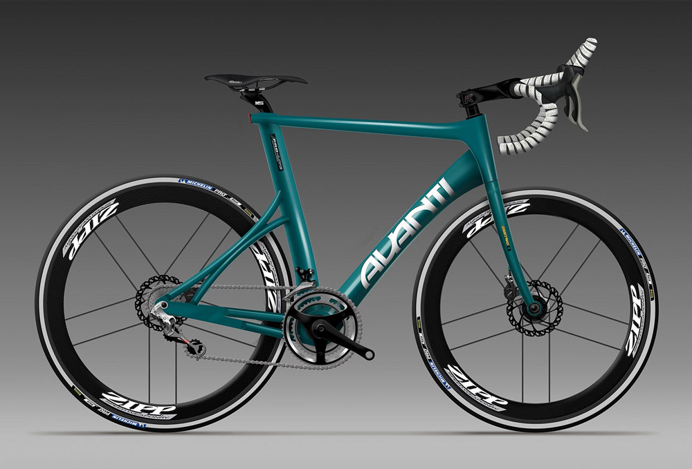

Hi, I’m Andrew. I love working in User Experience and solving user problems by bringing together users, developers and design. I like to move quickly and efficiently and I’m excited by new tools and technologies that enable this way of working.
I love working and contributing to dynamic teams - it is the only way to work. I admire great communicators and aspire to be one.
I grew up in the Eastern bay of Plenty and home is now Tauranga, New Zealand. Other homes over the years have been Rotorua, Wellington, Sydney and London.
I enjoy keeping fit so that I can keep up with my 2 daughters. I enjoy all sports including Rugby and Cricket and I'm looking forward to the upcoming Olympics. I’m a (fairweather) surfer and play in a couple of touch rugby teams.
Thanks for stopping by and don’t forget to reach out!
